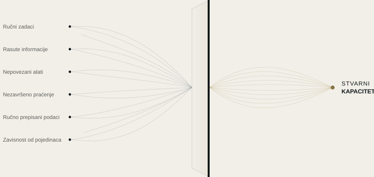

Automatizacija
Pretvaramo zadatke koji se ponavljaju u automatske procese, po pravilima koja definišemo zajedno sa Vama.
AUTOMATIZACIJA RESURSA
Većini firmi nisu potrebni novi alati. Potrebno im je da znaju gde im izmiču vreme, informacije i pažnja.
SKURX SYSTEMS otkriva gde se kapacitet gubi i pretvara ga u jasnije, povezanije i efikasnije načine rada.
ŠTA RADIMO
Otkrivamo gde Vaša firma gubi kapacitet i oslobađamo ga automatizacijom, povezanim alatima i primenjenom veštačkom inteligencijom tamo gde to ima smisla.

NAŠE USLUGE
Pretvaramo zadatke koji se ponavljaju u automatske procese, po pravilima koja definišemo zajedno sa Vama.
Za ono što pravilo ne može da reši: veštačka inteligencija jača Vaš tim, ne zamenjuje ga.
Povezujemo Vaše alate kako bi informacije prelazile iz jednog u drugi, bez ičije intervencije.
KAKO RADIMO
Ne polazimo od tehnologije, već od pitanja: gde Vaša firma gubi kapacitet i zašto?
Upoznajemo Vašu firmu iznutra, posmatrajući kako Vaš tim radi svakog dana.
Utvrđujemo gde se gube vreme, informacije ili potencijalni klijenti, i zašto.
Kažemo Vam šta bismo promenili, a šta ne vredi dirati.
Pokrećemo sistem, testiramo ga sa Vama i podešavamo dok ne bude radio onako kako je Vašem timu potrebno.
PRVI KORAK
Za nedelju dana analiziramo kako Vaša firma radi i predajemo Vam jasnu mapu: šta troši kapacitet, šta se može automatizovati i kojim redosledom. Izveštaj je Vaš, šta god da odlučite.
Svaki tok objašnjen jasnim jezikom.
Nalozi, alati i podaci su Vaši.
Možete videti šta je svaka automatizacija uradila i kada.
Ako prestanemo da sarađujemo, sve i dalje ostaje Vaše.
PRIMERI PO SEKTORIMA
Ilustrativni scenariji zasnovani na uobičajenim situacijama. Radimo sa firmama iz svih sektora, širom Španije.
Sve nastavlja da radi, i kada u kancelariji više nema nikoga.